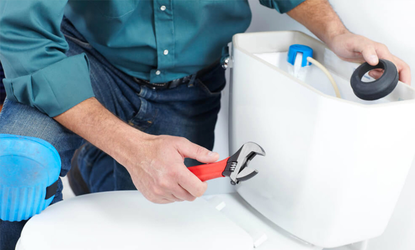
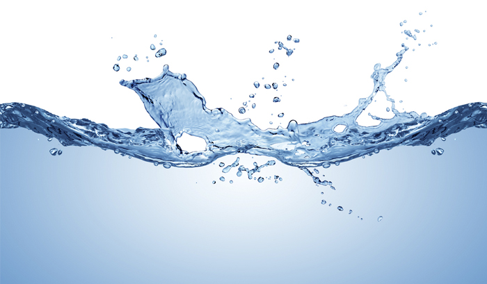

Saiba como consertar a descarga?
Existem alguns problemas cotidianos que podem fazer com que a descarga estrague ou...
Mais
Existem alguns problemas cotidianos que podem fazer com que a descarga estrague ou...
Mais
Uma torneira pingando representa um desperdício de, aproximadamente, 40 litros de água...
MaisQuando o assunto é sistema hidráulico é preciso estar atento a qualquer barulho ou comportamento...
Mais
A limpeza e manutenção de uma caixa d´agua é fácil, mas requer atenção e cuidados. Veja ...
Mais